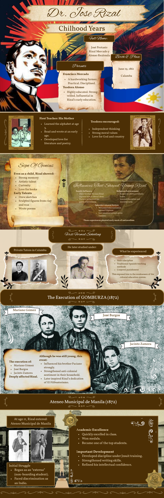
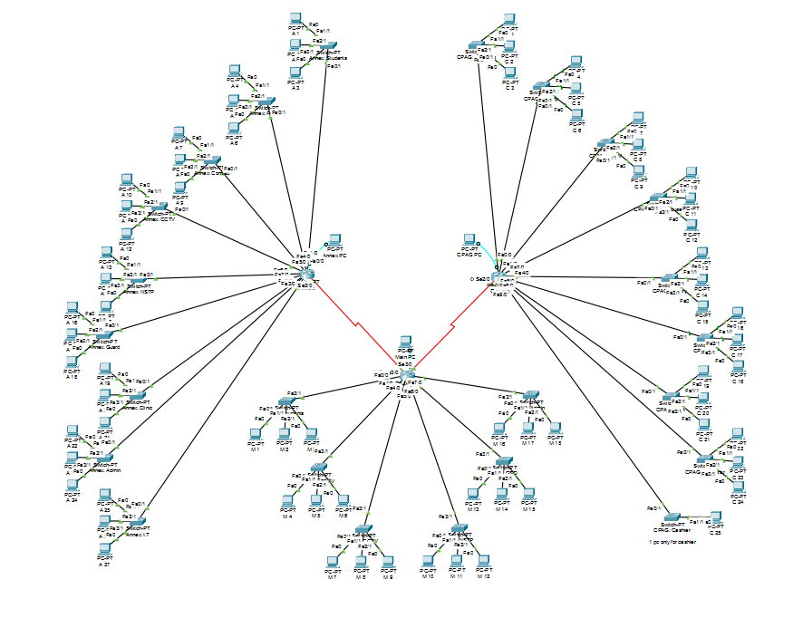
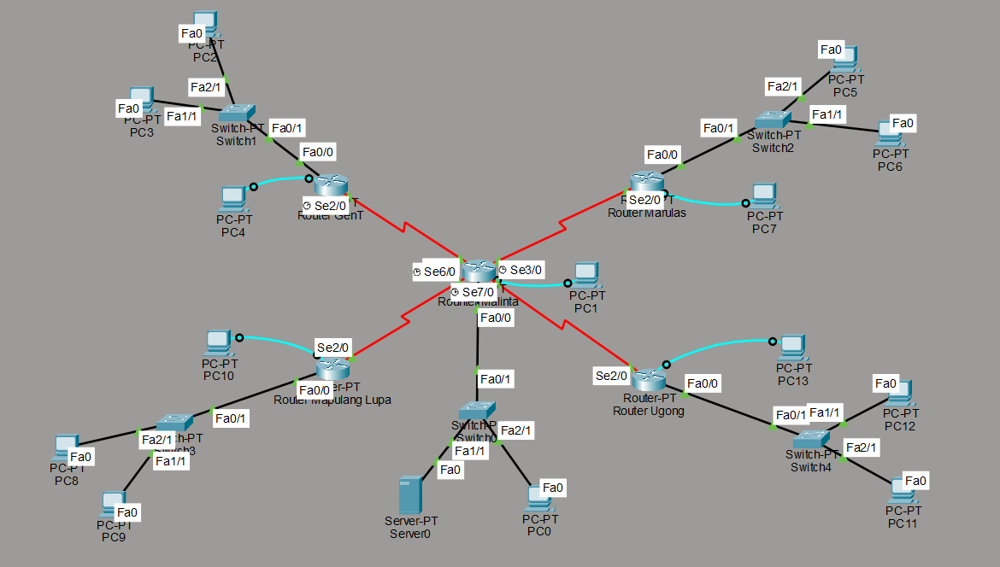

A curated collection of my work spanning software development, graphic design, UI/UX, and networking. Each project represents a step in my growth as both a developer and a designer.

House of Origami
A clean, multi-page educational website dedicated to the art of paper folding. Built using pure HTML and CSS, the project features a structured layout with card-based lesson galleries, a responsive navigation bar, and a consistent, warm color palette that mirrors the elegant aesthetic of origami.
HTML
CSS

Truth Over Trends
A comprehensive digital resource focused on media literacy and fact-checking. Built with a sleek, high-contrast aesthetic, the site provides actionable tools for identifying fake news and verifying information in a fast-paced digital landscape.
Wix

Youtube Home Page Mockup
A front-end UI mock-up of the YouTube interface. Built entirely with HTML and CSS to demonstrate proficiency in component-based layout design, hover effects, and replicating modern, high-traffic user interfaces.
HTML
CSS

Library Management System
A functional Java management system with a JSON-backed data layer. Developed to manage library inventories and user sessions through a structured command-line interface and efficient file-handling logic.
Java
JSON

Java Pacman Game
A Java-based recreation of Pac-Man, featuring a custom tile-map renderer, collision physics, and randomized ghost AI. Developed to demonstrate core game development concepts and efficient use of the Java Swing graphics library.
Java
Swing

Burger Promotional Flyer
A food promotional flyer featuring dark aesthetics, warm tones, and layered composition to highlight a limited-time offer.
Photoshop

ESTeBank Business Card
Corporate identity design featuring deep navy tones, metallic gold gradients, and sharp geometric elements. It utilizes layered composition to highlight professional credentials and banking values.
Photoshop
Figma

Dr. Jose Rizal Infographic
A vintage-style educational infographic on Dr. José Rizal's early life. Built with Photoshop and Canva, features a structured 'timeline' layout that effectively balances historical text with evocative imagery.
Photoshop
Canva

Scrap Book Prototype
A creative Figma prototype for a digital scrapbook, featuring a tactile 'paper-and-ink' aesthetic. It highlights skills in thematic UI/UX, custom navigation elements and stylized content blocks designed for storytelling.
Figma

VLSM Simulation
A network design utilizing Variable Length Subnet Masking (VLSM) to maximize IP address. This involves calculating and implementing specific subnet sizes to reduce address wastage and improve overall network performance.
Cisco Packet Tracer

DHCP Relay
A networking project on centralized IP management. It presents the configuration of DHCP relay to allow clients in different subnets to receive IP addresses from a single, centralized server, ensuring efficient network administration.
Cisco Packet Tracer

Valace Branches Simulation
A multi-branch network infrastructure simulation featuring inter-office connectivity and optimized routing. Demonstrates the implementation of a scalable enterprise network with a focus on efficient communication across multiple physical locations.
Cisco Packet Tracer